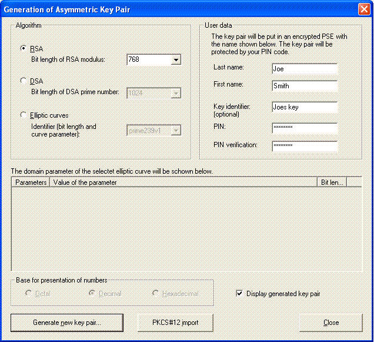
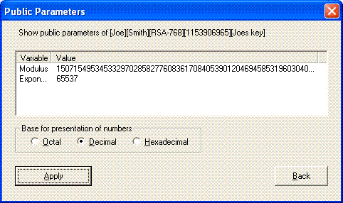
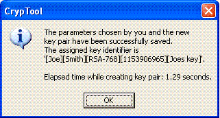
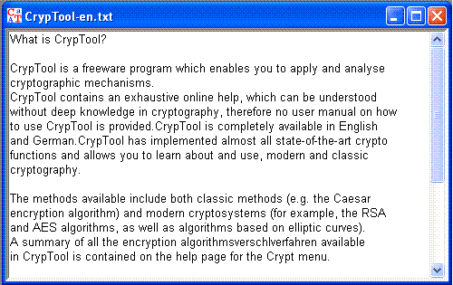
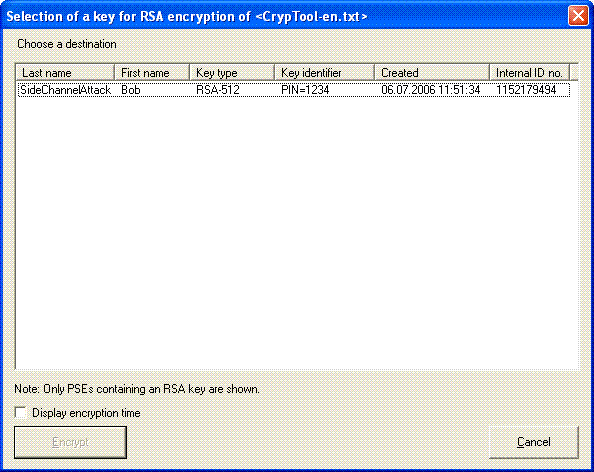
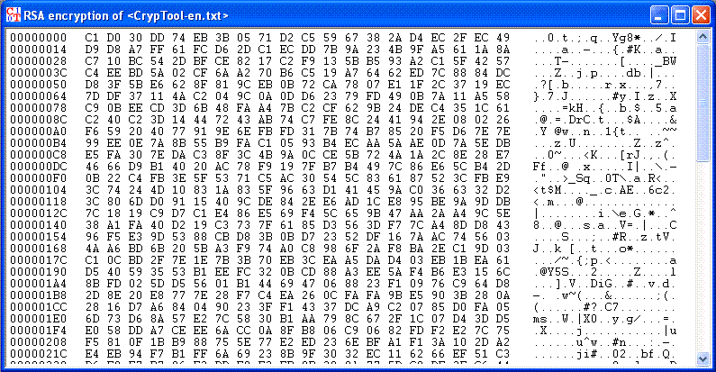
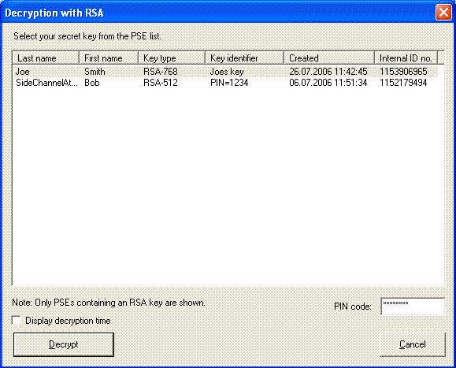

This section provides an example which illustrates the use of the RSA algorithm for encryption and decryption. To make it easier to follow the steps that need to be performed with CrypTool, the example is illustrated with a number of screenshots.
The encryption and decryption will be demonstrated by applying it to a text document.
First of all it is necessary (in the same way as for signature creation using the RSA encryption algorithm) to generate an asymmetric key pair. Select the menu Digital Signatures/PKI \ PKI \ Key Generation/Import, and the following dialog opens.

The name we enter is "Joe Smith", the optional key identifier is "Joes key" and the PIN (twice) is "CrypTool". The length of the modulus is 768 bits. After pressing the RETURN key or clicking on the "Generate new key pair" button the generation of the key pair will be started.
In the next window the public RSA parameters (public key) appear: the modulus composed of two prime numbers and the public exponent.

Click on "Apply key", and the name under which the key pair has been saved in the database and the time which elapsed during creation of the key pair are displayed.

When this dialog is closed, the Generation of asymmetric key pair dialog must also be closed by clicking on Cancel.
Now we load a part of the help text for CrypTool, "Introduction to CrypTool", which is contained in the file "CrypTool-en.txt". To open this document in CrypTool, select the menu File \ Open.

To initiate the encryption use RSA Encryption in the menu Crypt/Decrypt \ Asymmetric.

To start the encryption you have to choose the receiver (which includes his public key) and to click on the button Encrypt. For the encryption no PIN code is necessary. The following window shows the result of the encryption.

Asymmetric decryption can only be done by an authorized person: Therefore for decryption in contrast to the encryption you have to enter a PIN.

The cleartext then appears in the window for textual input and output. The follwing window shows the result.